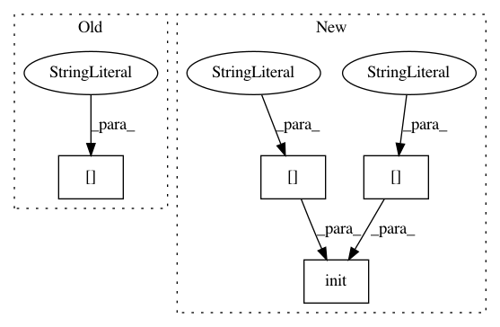

4b0134242f0e79bcdb022623be29e1e7db5445fc,examples/scripts/ray_parallel.py,,main,#Any#,123
Before Change
model = config["model"]
optimizer = config["optimizer"]
(train_X, train_Y), (dev_X, dev_Y) = config["dataset"]
return None
ray.init(ignore_reinit_error=True, object_store_memory=3000000000, num_cpus=3)
After Change
model.initialize(X=train_X[:5], Y=train_Y[:5])
// Now the Ray stuff...
ray.init(
ignore_reinit_error=True,
object_store_memory=config["ray"]["object_store_memory"],
num_cpus=config["ray"]["num_cpus"]
)
ps = ParameterServer.remote(model, optimizer)
workers = []
for i in range(config["ray"]["num_workers"]):
// The Ray tutorial didn"t tell me to set a different random seed for
In pattern: SUPERPATTERN
Frequency: 3
Non-data size: 4
Instances
Project Name: explosion/thinc
Commit Name: 4b0134242f0e79bcdb022623be29e1e7db5445fc
Time: 2020-01-04
Author: honnibal+gh@gmail.com
File Name: examples/scripts/ray_parallel.py
Class Name:
Method Name: main
Project Name: catalyst-cooperative/pudl
Commit Name: d86e920015a6dbd5f251eae1750b1cf347d220c6
Time: 2019-07-10
Author: zane.selvans@catalyst.coop
File Name: src/pudl/cli.py
Class Name:
Method Name: main
Project Name: catalyst-cooperative/pudl
Commit Name: c6392ec3c54f6bdbdd81d556286890752363cda5
Time: 2019-07-03
Author: zane.selvans@catalyst.coop
File Name: scripts/create_test_data.py
Class Name:
Method Name: main